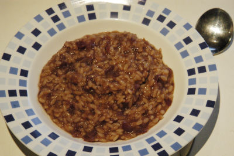

| Zutaten | |
| Zwiebel | |
| Olivenöl | |
| Kürbis | |
| Rotwein | |
| Risotto Reis | |
| Bouillon | |
| Salz | |
| Pfeffer | |
| Butter | |
| Parmesan | |
| Petersilie | |
Kürbis schälen und in Würfel schneiden
Zwiebel fein hacken
Bouillon zubereiten
Fein gehackte Zwiebel und Knoblauch in Olivenöl andünsten
Das gewürfelte Kürbisfleisch dazugeben
Dann mit Rotwein ablöschen. Zugedeckt köcheln lassen, bis der Kürbis zu Püree zerkocht ist.
In separater Pfanne Vialone-Reis in Öl glasig dünsten, mit Bouillon ablöschen; nach Zugabe der Hälfte des Kürbispürees salzen, pfeffern und den Reis zugedeckt quellen lassen.
Vor dem Servieren das restliche Püree, Butter, geriebenen Parmesan und gehackte Petersilie untermischen.
Herbert Eigenmann, Code: KÜR
Hmmh. Von Goldgelb kann ja nicht wirklich die Rede sein. Das Rezept verlangt Rotwein zum dünsten des Kürbis. Das gibt dem Gericht eine eher unappetitliche dunkelviolette Farbe. Den Geschmack beeinflusst das in keiner Weise; der ist hervorragend. Nur war Sandra's erste Reaktion "Wäh, was ist den das?". Vielleicht sollte man das besser mit Bouillon oder Weisswein kochen? RE, 1.3.2004
@LINKBACK_TAG@ @WAKELOCK@